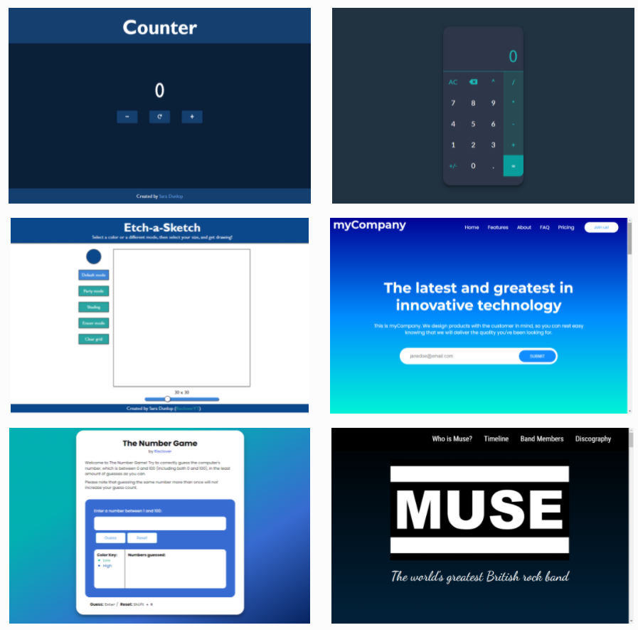

The Internet's Best Color Tools
I've discovered a fabulous website today, and that website is hexicolor.co. Hexicolor.co assists you with finding colors in almost every way imaginable. It has a color palette generator, a color gradient generator, a page of gradient colors that look great, color inspiration/ideas, color extractors, and more!
That's cool, Sara, but why the hell do you care so much, you weirdo?
Keep your panties on, Reader! I'll tell you why... you don't have to be rude about it. üôÅ
Before I began my journey in programming (and, as a side product, web design), one of my hobbies was coloring. I have an entire assortment of coloring books and coloring supplies - colored pencils, markers, gel pens, you name it - and I really enjoyed learning how to make beautiful coloring pages via techniques such as shading, highlighting, etc.
However, I am not an artist by nature. I am more of an "intellectual" type. I grew up playing piano and I was okay at it, but my real talents lie in things that are more academic-oriented, like writing and programming. So although I don't think I'm the worst in the world in terms of art, I certainly don't have the natural talent that, for example, my fiance, who is a graffiti artist and has a knack for drawing and painting, has.
As a result, whenever I went to work on a coloring page, I would spend WAY too long in the stages before I even put color on the page. I researched how to do those aforementioned techniques, I bookmarked countless color palettes and color palette generators, and I watched videos to try to catch inspiration. Sometimes I would get inspired to color, but thanks to the doubt embedded into me that I can produce something beautiful or attractive, I would rarely get to the point where I began coloring. Sadly, this was something that happened a lot more often than not.
And that's why I'm excited to have found hexcolor.co (not sponsored, I promise). This was something I definitely could have used back then, and I feel that it's going to be extremely useful for web design as well, because my fault with art isn't something that has necessarily changed. I mean, look at this screenshot of my portfolio:
Do you see a recurring theme? Mama likes cool tones and gradients, doesn't she?
...Yikes.
But seriously. If you're like me and suck at picking colors, or even if you're not like me and want help anyway, check this website out! They have a lot of really cool tools on there, and I have a feeling it's going to come in handy. We'll see if I can stray from my color comfort zone, at least.